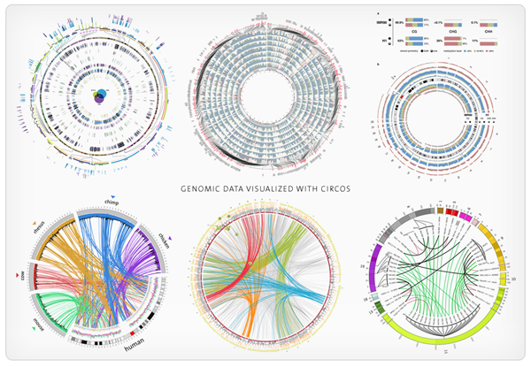

{% extends "base.html" %}
{% block content %}
Visual Genomics Platform
Transforming Raw Data into Knowledge
Download beadchip data from GEO accession browser and visualize it in a variety of formats

What's beadchip data? Click the video below to find out.
{% endblock %}